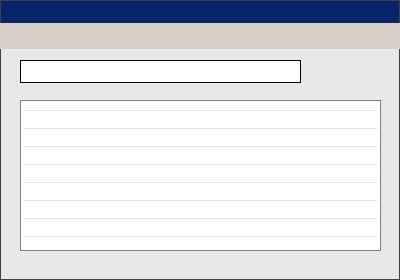

Simulated FastTrack results. Nothing is downloaded to your computer. No real P2P files.
← KaZaA home
Starting Point · Year flow map · KaZaA · search · eBay · Encarta vs Wikipedia · Excite · Fark · Fotolog · Friendster · GameSpot · Yahoo! GeoCities · Gnutella · Google · Google News · Hampster Dance · Homestar Runner · HotBot · ICQ · Infoseek · CableNet Broadband · last.fm / Audioscrobbler seed · LiveJournal · Loudcloud · Macromedia Flash · Meetup